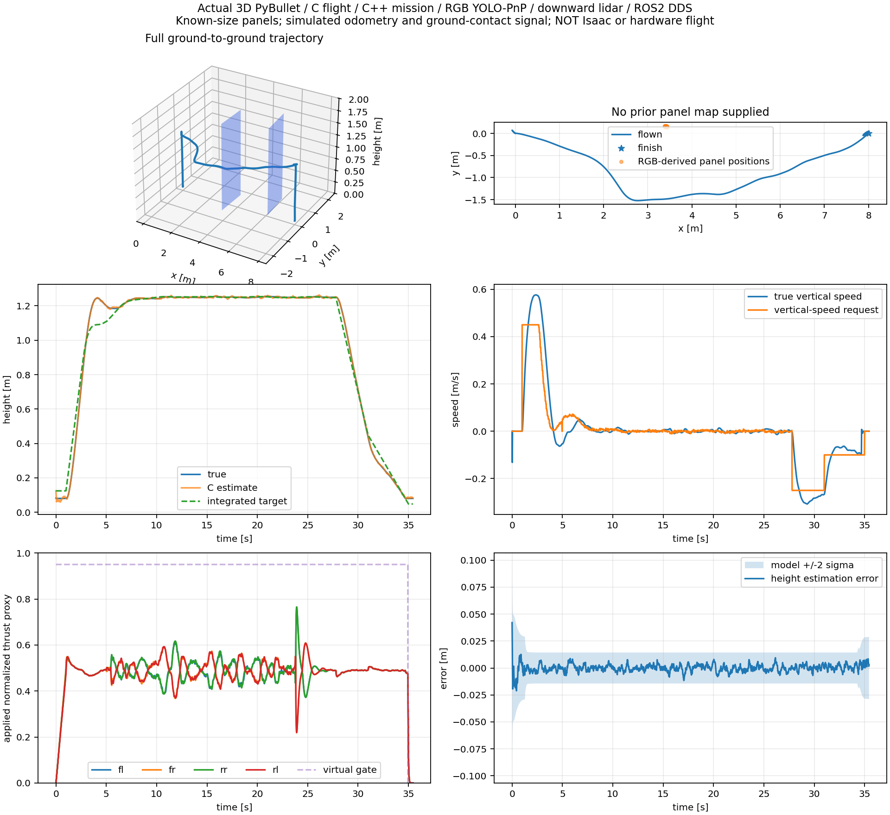
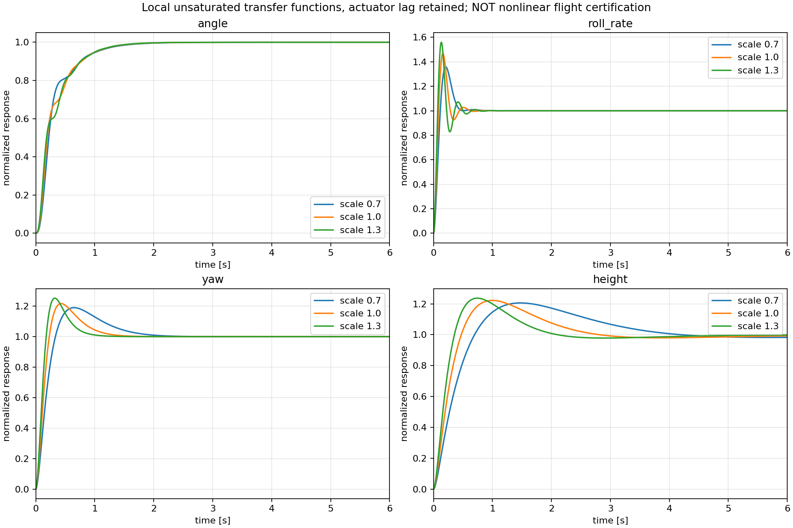

Original 3D garden recording · 20 October 2026
PyBullet, not Isaac Sim. Production C flight loops + common C++ mission/navigation + actual RGB YOLO/PnP + ROS 2 DDS adapters.
Takeoff → hover → navigation → approach → descent → contact → virtual actuator wind-down. Video includes the actual camera detections and progressing graphs.
Assumed 1.2 kg airframe; simulated odometry and ground contact. Blue panels have known size. Only one of two panels was mapped; successful travel does not prove complete detection. No true obstacle map/depth enters navigation. Physical motor arming is disabled. ROS C++ wrappers remain unbuilt; the actual DDS test uses Python adapters and compiled common cores. Windows latency exceeds 2 ms in some requests.


The conservative 0.7 gain scale passes the stated continuous-interval local Routh bounds and 675 grid checks. This excludes saturation, estimator error and contact, and does not establish global nonlinear or real-flight stability.